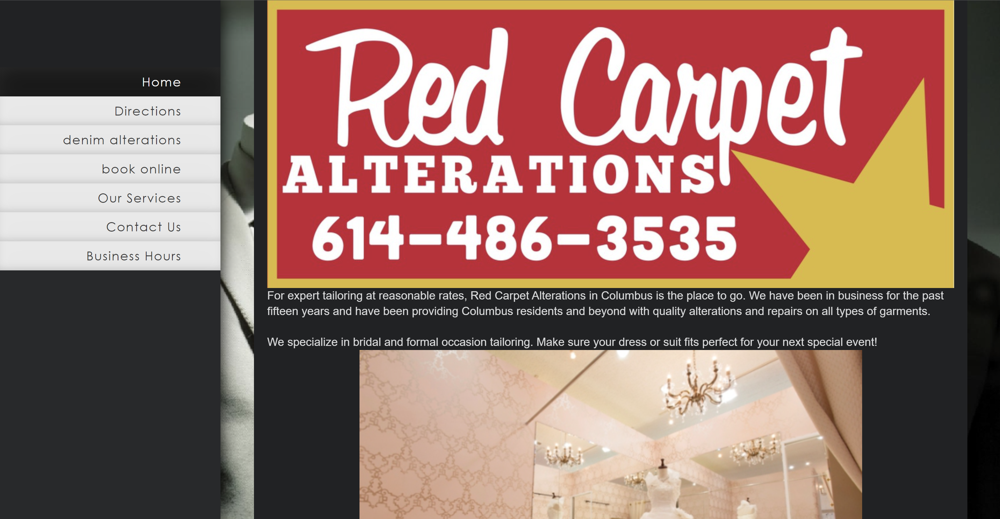
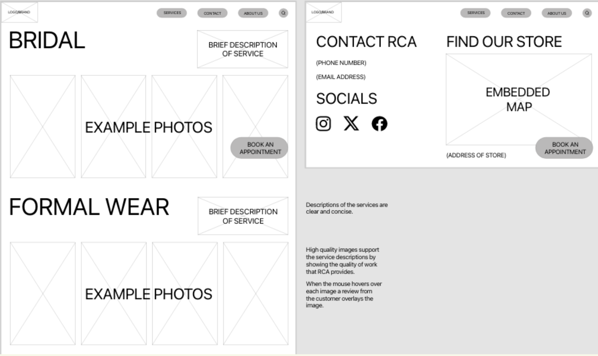

Red Carpet Alterations
We revamped the website for a local tailoring service store.
Project Type
Website Redesign
Roles
Project Manager: Jocelyn Bailey
UX Designers: Justin Tran, Will Henson, Ethan Davis
Tools
Adobe XD
Qualtrics
Useberry
Duration
January 2024 - April 2024
Problem
The website lacks visual appeal and essential information, such as Red Carpet Alterations' hours, contact details, and directions, making navigation difficult. Additionally, there are issues with booking appointments.
This negatively impacts user experience, fostering distrust towards the services and the business. In preliminary testing, many users expressed frustration and some gave up trying to find essential information. Consequently, many would prefer alternative businesses, affecting Red Carpet Alterations' potential customer base.
Solution
Enhance Red Carpet Alterations' website by modernizing the design, adding essential information, and implementing an improved booking system.
This will improve navigation, increase user engagement, and streamline the appointment scheduling process.
The Process
We separated the solutions into two categories: updating the visual design and improving functionality.
Utilizing these solutions can enhance the credibility of the site, making the user feel safe and confident in the company and simultaneously contributing to the success of the company through increased clientele.
To start, we used 5 different research methods to gain more insight.
Direct Interviews
The direct interview style is an effective way of gaining knowledge about particular aspects of our project’s undertaking. Specifically, insights collected from these interviews will be centered around the booking/consultation form.
The interviewee was asked specific and sometimes rigid questions to obtain factual information regarding their experience with the current booking form.
Through direct interviews, participants emphasized the importance of a user-friendly interface, single-page booking forms, clear guidance, appointment confirmations, transparent pricing, review and edit options, robust security measures, and privacy assurances to ensure a seamless and trustworthy booking experience.
Card Sorting
This method aided our team in strategically organizing services within a concise layout to avoid redundancy and confusion, overall enhancing users' clarity.
We went through 3 iterations for the navigation of the website, with the last iteration being used for the website's final information architecture.
'
First-Click Testing
First-click testing was beneficial due to the visual representation of how users interact with the application. This will allow our team to see what features and elements draw the users’ attention and those that don’t via a heatmap.
Useberry was utilized in tandem with specific tasks that the participant will have to perform.
Tasks can included navigating to a certain page or finding a specific piece of information, like the address or phone number of Red Carpet Alteration.
For example, the following heat map was created based on where users thought to click in order to make an appointment.
Using this information we can see where we can test the effectiveness of our information architecture and make edits to our site’s navigation.
Non-Direct Interview
The non-direct interview process consisted of letting the interviewee take control of the website and are free to say anything that comes to mind; what they like, what they don’t like, what they think should be changed, how the experience makes them feel.
We then record their actions, thoughts, and feelings in order to identify any trends that will give us insight on how to improve our website.
Exit Survey
Using the surveying platform, Qualtrics, we populated a variety of questions to gather as much insight on users’ perceptions of the current website and its functionality.
With this information, we analyzed user feedback to identify key areas for improvement, enhance website functionality, and optimize user experience. The insights gathered will guide our decisions on adjustments and feature enhancements.
Site Architecture
This was the site architecture before our research.
And this is our revised version based on user and business needs.
We restructured the website by combining tabs, simplifying service categories, adding an "About Us" tab, consolidating contact information, removing redundant forms, and eliminating dead ends and broken links to enhance user experience and flow.
Wireframing
Using all of this information, we each created a lo-fi wireframe to establish a basic layout of the new website.
Then, we picked which page we liked the best from each of our wireframes, combining it into one final wireframe.
Brand Guidelines
Now that we have established the wireframes to map out the structure, let's move on to the brand guidelines to ensure visual consistency and alignment with our brand identity.
We established heading and body fonts, as well as a color palette, which took inspiration from the original color palette.
After, we started iterating logo designs.
Our first iteration kept the vintage look, but the colors didn't work well and the logo didn't scale well.
Then, we came up with a logo to incorporate a red carpet rolling out as the “C.” This was a lot simpler and a lot clearer than previous iteration.
Prototyping
Using these brand guidelines and assets, we created a interactive prototype, which can be viewed here.